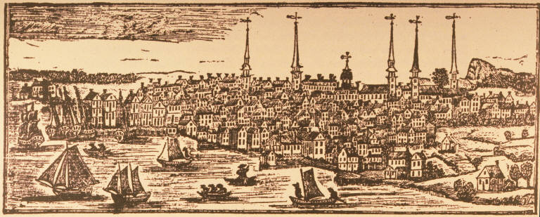
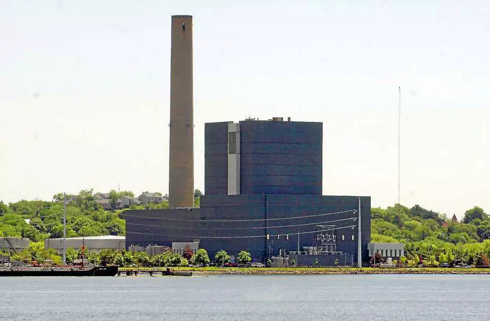
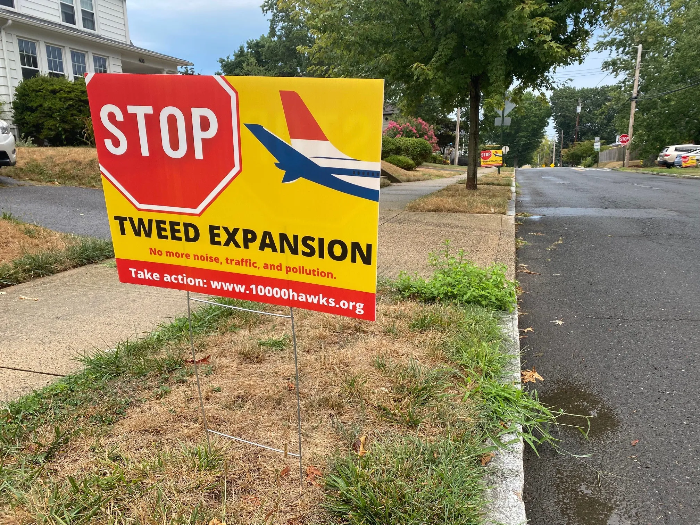

Paradise can be found along the abandoned New Haven shore …
Where cultures and flavors met …
This is New Haven's Food Truck Paradise …
Paradise can be found along the abandoned New Haven shore …
Where cultures and flavors met …
This is New Haven's Food Truck Paradise …
When the first vendors came to Long Wharf in 2009, it was barren marshland.
Today, walking through on a Sunday afternoon, you can hear a constant chatter of Spanish and ingredients
Every day, one can hear Spanish tk tk tk need images
One day, it appeared on Google Maps
In 2016, New Haven mayor made the name official: 'Food Truck Paradise' tk tk
"“We call it ‘Food Truck Paradise’ because that’s what Google calls it,”"
Downtown New Haven is only a 7 minute car ride or a 30 minute walk away from the New Haven shore

New Haven also used to be a very important port city
Yet people living in New Haven don't seem to think about the shore at all.


Because the shore seems forgotten by the city's residents, the city can put negative externalities here.
In 1975, the city innaugrated the 'New Haven Harbor Station' just opposite Long Wharf, on New Haven's East Shore
The plant was constructed just two years before Congress amended the Clean Air Act in 1977.
It was named amongst the 'Sooty Six' in 2000, as it was found out that it had been spewing pollution for decades
The health impacts from power plant pollution is 2-4 times greater within 20 miles of the stack.
The Tweed airport, situated amidst residential neighborhoods, has long been a source of contention among local residents.
For those who live nearby in East Haven, the airport's operations pose significant challenges, ranging from increased noise pollution to concerns about air quality and safety.
Under a new proposed expansion, Avports, part of Goldman Sachs, the current operator of the airport, would lease a portion of the airport for a $100 million project.
Despite being fraught with environmental and residential problems, the city had pushed through the masterplan
According to a noise projection study as part of the Tweed Expansion Master Plan, the Tweed expansion is expected to exacerbate noise pollution in the surrounding areas.
Increased noise from airports has been linked to various psychological and health issues for nearby residents.
Research from 2017 highlighted the correlation between aircraft noise and elevated stress levels, sleep disturbances, cardiovascular ailments, and hindrances to children's education.
The Food Trucks first came to Long Wharf in 2009. Given the area's disuse and disregard by the city, they could exist here without trouble.
A community soon grew around them. The first Food Truck Festival was held on the Wharf.
This, finally, put the city on notice. The city extended its support for the Food Truck Paradise, investing in infrastructure to make the food trucks a more amenable spot.
But now, leveraging the success of the Food Truck Paradise, the city aims to embark on a comprehensive redevelopment plan for Long Wharf. This initiative seeks to further capitalize on the area's newfound popularity by integrating mixed-use spaces, recreational facilities, and cultural attractions.
city investment visual? what would that be
It's unclear if these new plans include a space for the foodtrucks that made it possible for the city to revive the area
The largely white neighborhoods near the Wharf do not wish for their surroundings to be defined by the 'brash' trucks
Will they have space to exist?
The evolution of Long Wharf through the Food Truck Paradise has been a remarkable success story.
From being forgotten, the New Haven shore has transformed into a bustling community hub, drawing diverse crowds to enjoy culinary delights against the backdrop of New Haven's waterfront.
Yet, as the city pursues redevelopment plans for Long Wharf's future, the fate of the food trucks remains uncertain. While the vision for mixed-use spaces and cultural attractions is promising, it's essential to preserve the unique charm that these trucks have brought to the area.